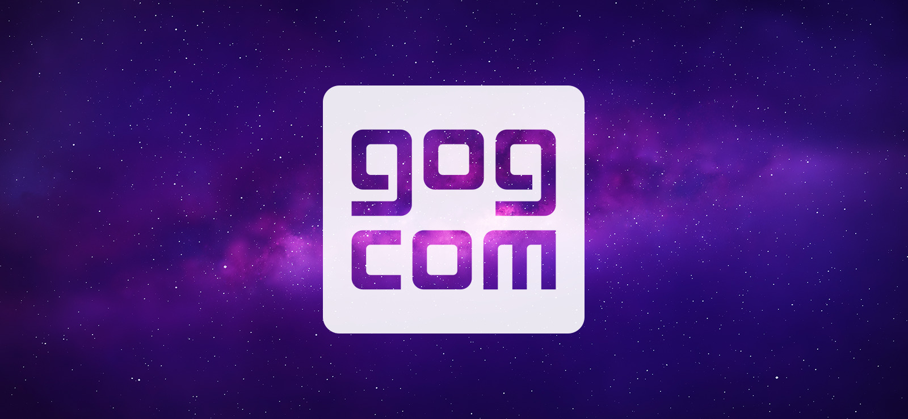

최신게임엔 스팀이 있다면 고전게임엔 GOG.com가 있다.
2008년 2월 22일 폴란드의 게임 회사인 CD 프로젝트 RED가 설립하고, 2008년 8월 1일부터 개시된 PC 게임 다운로드 판매 사이트다. 이름은 '지오지닷컴'으로 발음하며, 이는 Good Old Games의 약자로. 고전게임을 중점으로 취급하는 ESD의 성향을 잘 반영하고 있다. 사내에서는 CD 프로젝트 Blue로 불린다고 한다.
처음에는 고전게임만을 취급했었지만 현재는 고전게임을 비롯해서 인디게임, 인디영화 및 고전영화와 일부 최신 게임들까지 사업 영역을 넓히고 있다. 스팀에 비견할만한 규모는 아니지만 해가 갈수록 성장속도가 점점 더 빨라지고 있으며 2015년 안으로 상점에 등록된 게임+영화가 1,300개가 넘어갈 예정이다. 아래에 설명되어 있는 GOG의 성향을 감안하자면 상당한 성과를 이룩해내고 있고 아직도 GOG에 입접하지 않은 대형 게임회사(세가, 코나미 등)가 남아있는 것을 보면 앞으로도 더 성장할 여지는 남아있다.